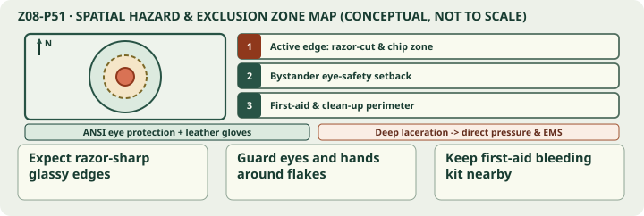

Z08-P51 · Rocks, minerals and materials · New manuscript
Sharp Flake and Edge-Failure Hazards in Siliceous Stone
Recognize razor-sharp flake laceration and eye-projectile risks associated with naturally fractured chert, quartz, and volcanic glass.
When it applies · Observing fractured gravel, chert outcrops, and educational flint-and-steel demonstrations.
Equipment · ANSI Z87.1 eye protection, heavy leather gloves where handling sharp edges.

Actions
- Treat freshly fractured chert, flint, quartz, and obsidian edges as razor-sharp surgical hazards capable of severing tendons on bare hands.[R05, R06]
- Require wrap-around eye protection, bystander setback, and leather gloves during any supervised lawful historical demonstration involving struck stone.[R05, R06, C03]
- Never leave sharp stone debitage or shattered glass fragments on trails, beaches, or campsites where barefoot people or pets walk.[R06, R08]
Failure recognition · Handling broken chert barehanded or striking stone without eye protection causes deep lacerations and permanent corneal injury.[R05, R06]
Verify · Bystanders remain clear, eye and hand protection are worn during supervised demonstrations, and zero sharp debris is left behind.[R06]
Stop or change course · Stop striking stone immediately if glasses fog, chips fly toward bystanders, or skin is nicked; control bleeding promptly.[R06, M01]
Evidence and editorial notes
- C03 · USDA Forest Service / Smokey Bear · Smokey Bear’s Campfire Safety Guide (agency PDF)
- Section: Build your campfire > Tinder, kindling, fuel · Conditions: Outdoor authorized campfire
Support: Dry tinder, small kindling and larger fuel serve different roles. Gather materials before ignition. Avoid accelerants.
Limitations: Species availability and moisture content vary by season and local collection rules. · Conflicting evidence: None; separates material function from unverified species claims.
Editorial note: Used to stage three-tier fuel geometry without prescribing specific live trees. · Specialist reviewer: Fire prevention
Primary source · checked 2026-11-24 - M01 · American College of Surgeons · STOP THE BLEED Training Course (current web edition)
- Section: Ensure Your Own Safety; Find Life-Threatening Bleeding; Compress · Conditions: Lay responder encountering severe external hemorrhage
Support: Ensure scene safety first, call 911, expose the wound to locate life-threatening bleeding, and apply firm continuous direct pressure with clean gauze or cloth.
Limitations: Does not replace formal hands-on Stop the Bleed training or EMS trauma care. · Conflicting evidence: None across ACS/ARC guidelines.
Editorial note: Separates life-threatening arterial/venous hemorrhage from minor scrapes. · Specialist reviewer: Wilderness medicine and trauma EMS
Primary source · checked 2026-11-24 - R05 · Minnesota DNR · Rocks and Minerals of Minnesota Educational Guide (Current web edition)
- Section: Chert, jasper, agate, and quartz occurrences · Conditions: Upper Midwest siliceous cobbles and sedimentary nodules
Support: Cryptocrystalline quartz varieties (chert, flint, jasper, agate) are hard silica rocks showing conchoidal fracture rather than planar cleavage.
Limitations: Visual similarity to fine-grained quartzite, basalt, or glass does not confirm thermal stability or structural suitability. · Conflicting evidence: None noted.
Editorial note: Anchors Z08 siliceous stone identification. · Specialist reviewer: Geologist and materials specialist
Primary source · checked 2026-11-25 - R06 · NIOSH / CDC · Crystalline Silica Respiratory Dust Hazards (2024)
- Section: Overview; Exposure · Conditions: Silica-bearing material disturbed by cutting, grinding, or similar dust-producing work
Support: Respirable crystalline silica exposure can cause silicosis and other disease. Avoid creating dust during field recognition.
Limitations: Hazardous particles may be invisible. Wind, casual wetting and a mask alone do not establish exposure control. · Conflicting evidence: Conditions are recorded in the A03 audit.
Editorial note: Mandatory Z08 silica/eye safety gate. · Specialist reviewer: Industrial hygienist and geologist
Primary source · checked 2026-11-25 - R08 · National Park Service / eCFR · 36 CFR 2.1 Preservation of Natural, Cultural and Archeological Resources (Current CFR)
- Section: 36 CFR 2.1 natural resource collecting prohibitions · Conditions: National Parks, Monuments, and federal recreation areas
Support: Collecting rocks, minerals, fossils, wood, or natural specimens is prohibited on National Park System lands unless specifically authorized.
Limitations: Rules vary across USFS, BLM, state, tribal, county, and private lands; check the governing land manager before taking any sample. · Conflicting evidence: None noted.
Editorial note: Prevents unlawful federal resource extraction. · Specialist reviewer: Public-lands resource manager
Primary source · checked 2026-11-25
Source lineage · New manuscript (Z08 P16 failure recognition) · Classification · New manuscript.